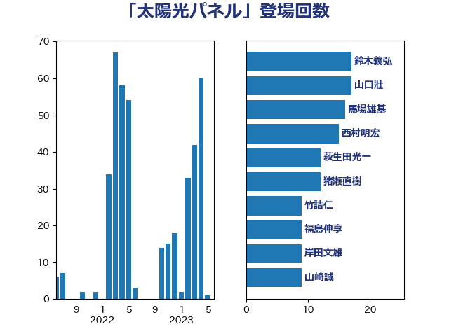

単語「太陽光パネル」

| 鈴木義弘 | 国民民主党 | 17 回 |
| 山口壯 | 自由民主党 | 17 回 |
| 馬場雄基 | 立憲民主党 | 16 回 |
| 西村明宏 | 自由民主党 | 15 回 |
| 萩生田光一 | 自由民主党 | 12 回 |
| 猪瀬直樹 | 日本維新の会 | 12 回 |
| 竹詰仁 | 国民民主党 | 9 回 |
| 福島伸享 | 無所属 | 9 回 |
| 岸田文雄 | 自由民主党 | 9 回 |
| 山崎誠 | 立憲民主党 | 9 回 |
| 小野泰輔 | 日本維新の会 | 8 回 |
| 青木愛 | 立憲民主党 | 7 回 |
| 遠藤良太 | 日本維新の会 | 7 回 |
| 杉田水脈 | 自由民主党 | 7 回 |
| 足立康史 | 日本維新の会 | 6 回 |
| 落合貴之 | 立憲民主党 | 6 回 |
| 清水貴之 | 日本維新の会 | 6 回 |
| 梅村みずほ | 日本維新の会 | 6 回 |
| 平山佐知子 | 無所属 | 6 回 |
| 伊藤孝江 | 公明党 | 6 回 |
| 西村康稔 | 自由民主党 | 5 回 |
| 櫛渕万里 | れいわ新選組 | 5 回 |
| 金城泰邦 | 公明党 | 4 回 |
| 河西宏一 | 公明党 | 4 回 |
| 水岡俊一 | 立憲民主党 | 4 回 |
| 森田俊和 | 立憲民主党 | 4 回 |
| 枝野幸男 | 立憲民主党 | 4 回 |
| 斉藤鉄夫 | 公明党 | 4 回 |
| 勝俣孝明 | 自由民主党 | 4 回 |
| 務台俊介 | 自由民主党 | 4 回 |
| ながえ孝子 | 無所属 | 4 回 |
| 輿水恵一 | 公明党 | 3 回 |
| 谷合正明 | 公明党 | 3 回 |
| 舟山康江 | 国民民主党 | 3 回 |
| 福田昭夫 | 立憲民主党 | 3 回 |
| 田島麻衣子 | 立憲民主党 | 3 回 |
| 市村浩一郎 | 日本維新の会 | 3 回 |
| 山本剛正 | 日本維新の会 | 3 回 |
| 中川宏昌 | 公明党 | 3 回 |
| 高橋千鶴子 | 日本共産党 | 2 回 |
| 青山繁晴 | 自由民主党 | 2 回 |
| 野村哲郎 | 自由民主党 | 2 回 |
| 空本誠喜 | 日本維新の会 | 2 回 |
| 田村貴昭 | 日本共産党 | 2 回 |
| 漆間譲司 | 日本維新の会 | 2 回 |
| 斎藤アレックス | 国民民主党 | 2 回 |
| 山岡達丸 | 立憲民主党 | 2 回 |
| 小泉進次郎 | 自由民主党 | 2 回 |
| 寺田静 | 無所属 | 2 回 |
| 大野泰正 | 自由民主党 | 2 回 |
| 和田有一朗 | 日本維新の会 | 2 回 |
| 加藤鮎子 | 自由民主党 | 2 回 |
| 住吉寛紀 | 日本維新の会 | 2 回 |
| 中野英幸 | 自由民主党 | 2 回 |
| 中田宏 | 自由民主党 | 2 回 |
| 高市早苗 | 自由民主党 | 1 回 |
| 馬場伸幸 | 日本維新の会 | 1 回 |
| 長妻昭 | 立憲民主党 | 1 回 |
| 里見隆治 | 公明党 | 1 回 |
| 逢坂誠二 | 立憲民主党 | 1 回 |
| 西野太亮 | 自由民主党 | 1 回 |
| 葉梨康弘 | 自由民主党 | 1 回 |
| 篠原孝 | 立憲民主党 | 1 回 |
| 源馬謙太郎 | 立憲民主党 | 1 回 |
| 浦野靖人 | 日本維新の会 | 1 回 |
| 河野義博 | 公明党 | 1 回 |
| 森本真治 | 立憲民主党 | 1 回 |
| 梶山弘志 | 自由民主党 | 1 回 |
| 松本剛明 | 自由民主党 | 1 回 |
| 本庄知史 | 立憲民主党 | 1 回 |
| 末次精一 | 立憲民主党 | 1 回 |
| 日下正喜 | 公明党 | 1 回 |
| 平木大作 | 公明党 | 1 回 |
| 平将明 | 自由民主党 | 1 回 |
| 岸真紀子 | 立憲民主党 | 1 回 |
| 岩渕友 | 日本共産党 | 1 回 |
| 山口那津男 | 公明党 | 1 回 |
| 塩村あやか | 立憲民主党 | 1 回 |
| 坂本祐之輔 | 立憲民主党 | 1 回 |
| 中谷真一 | 自由民主党 | 1 回 |